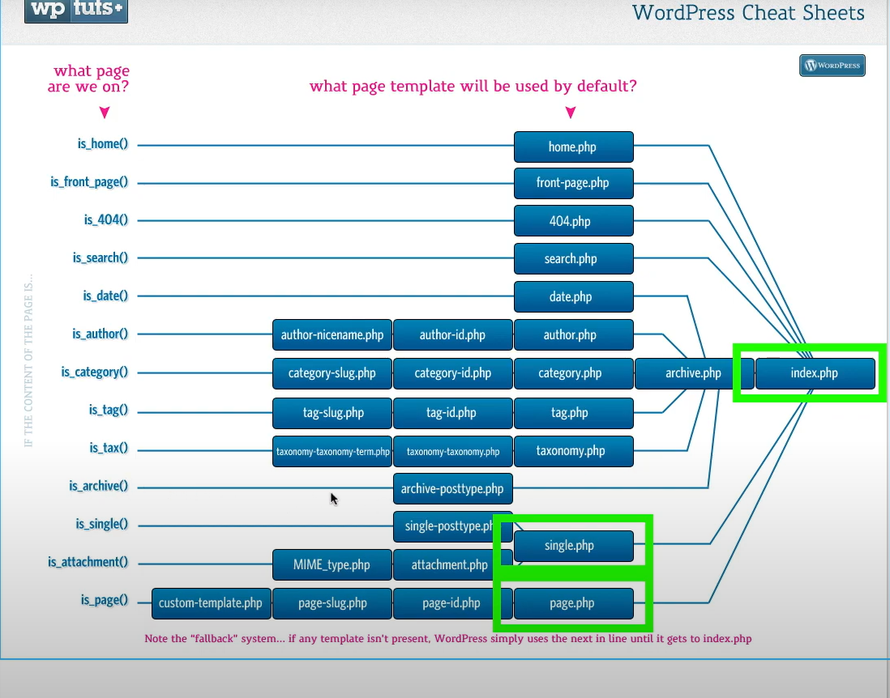

<div class="container">
    <div class="row justify-content-center">
      <!-- Colonna principale per l'immagine (8 colonne) -->
      <div class="col-lg-12">
        
      </div>
  
      <!-- Colonna per il carousel (4 colonne) -->
      <div class="col-lg-4">
        <div id="carouselExampleInterval" class="carousel slide" data-bs-ride="carousel">
          <div class="carousel-inner">
            <div class="carousel-item active" data-bs-interval="10000">
              
            </div>
            <div class="carousel-item" data-bs-interval="2000">
              
            </div>
            <div class="carousel-item">
              
            </div>
          </div>
          <button class="carousel-control-prev" type="button" data-bs-target="#carouselExampleInterval" data-bs-slide="prev">
            <span class="carousel-control-prev-icon" aria-hidden="true"></span>
            <span class="visually-hidden">Previous</span>
          </button>
          <button class="carousel-control-next" type="button" data-bs-target="#carouselExampleInterval" data-bs-slide="next">
            <span class="carousel-control-next-icon" aria-hidden="true"></span>
            <span class="visually-hidden">Next</span>
          </button>
        </div>
      </div>
    </div>
  </div>
  